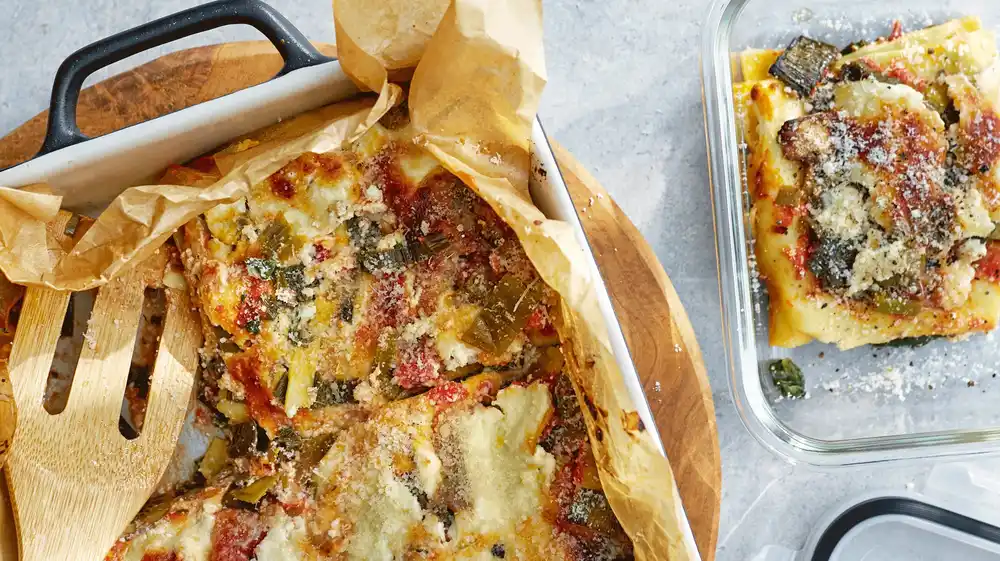
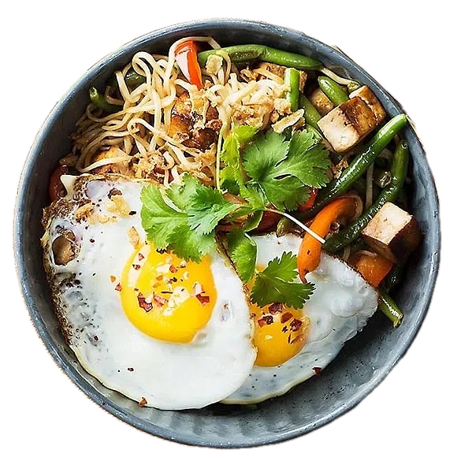

Alla recept
Alla recept
Här hittar du alla våra recept!
Vegetarisk curry

Vegetarisk lasagne
Fiskgryta
Fried rice med räkor
Köttfärslimpa
Cajungrillad lax
Stekt ris med kycklingfärs
Korvstroganoff
Köttbullar
Kycklinggryta
Kycklingpasta med pesto
Lax med couscous
Biffwok
Oxfilé med potatisgratäng
Pannkakor
Spagetti med köttfärssås

Vegetariska nudelwok med tofu
Vegetariska kåldomar